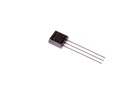
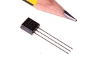

TO-92 Adjustable Voltage Regulator 100 mA - V92A
Summary
Name: TO-92 Adjustable Voltage Regulator 100 mA
ID: VREG-T92-X-ADJU-AH
Hex ID: V92A
WebPage: https://github.com/oomlout/oomlout-OOMP/wiki/VREG-T92-X-ADJU-AH
Short URL: http://oom.lt/V92A
Revision History: https://github.com/oomlout/oomlout-OOMP/blob/master/parts/VREG-T92-X-ADJU-AH/
| Type |
Size |
Color |
Description |
Index |
VREG
Voltage Regulator |
T92
TO-92 |
X
|
ADJU
Adjustable |
AH
100 mA |
Images


About
This part is awaiting a description.
Specifications
| Info |
Value |
| Type |
Voltage Regulator |
| Size |
TO-92 |
| Description |
Adjustable |
| Index |
100 mA |
| Number of Pins |
3 |
Extra Details
Spotted a mistake, want to add more? Let us know oomp@oomlout.com
All images and resources are licensed [CC BY-SA] unless otherwise stated (ie. the datasheets)